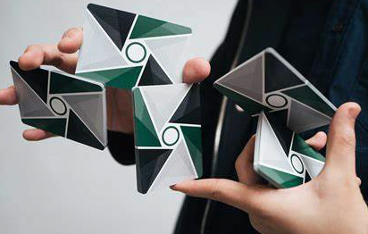
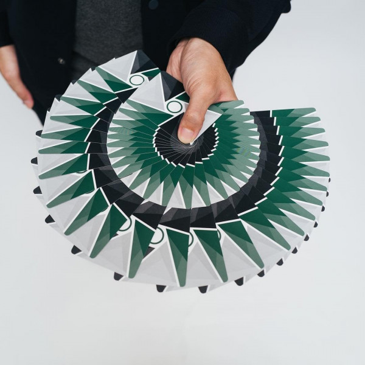

Fingerfertigkeit

Cardistry ist eine Kunstform, bei der Spielkarten auf kreative und ästhetische Weise manipuliert werden.
Anders als beim Kartenzaubern, bei dem der Fokus auf der Illusion und der Täuschung liegt, konzentriert
sich Cardistry auf geschickte und flüssige Bewegungen, um visuell beeindruckende Muster und Formationen mit
den Karten zu erstellen. Es ist eine Mischung aus Fingerfertigkeit, Geschicklichkeit und Kunst,
bei der Künstler komplexe Kartenmanipulationen durchführen, wie z.B. Fächern, Drehungen und Würfe,
um beeindruckende visuelle Effekte zu erzeugen. Cardistry ist weniger auf die Erstellung von Illusionen
ausgerichtet als vielmehr auf die Erschaffung faszinierender Bewegungskunst mit Spielkarten.

Seit etwa 4 Jahren, also seit 2020, beschäftige ich mich intensiv mit Cardistry.
Die Faszination für diese Kunstform entwickelte sich aus meiner Liebe zum Zaubern.
Im Laufe der Zeit habe ich verschiedene Flourishes gelernt und schließlich begonnen, mich
ausschließlich auf Cardistry zu konzentrieren. Persönlich ziehe ich Cardistry sogar dem
Zaubern vor, obwohl beide Aktivitäten sehr unterschiedlich sind.
Im Verlauf meiner Cardistry-Reise bin ich auch zu einem leidenschaftlichen Sammler von
Spielkarten geworden. Meine Sammlung umfasst eine Vielzahl besonders hochwertiger,
ästhetischer oder einzigartiger Kartendecks, die mir sehr am Herzen liegen. Unter meinen
Favoriten befinden sich vor allem Cardistry-Decks von Virtuoso, obwohl sie leider auch recht
kostspielig sind.
Meine Faszination für Cardistry liegt für mich in der beeindruckenden Eleganz und dem
nahtlosen Ablauf der Bewegungen. Es fasziniert mich, eine Cardistry-Technik sauber zu
beherrschen, denn die fließenden Bewegungen sehen nicht nur smooth aus, sondern fühlen
sich auch unglaublich gut an. Die Fingerfertigkeit, die viele dieser Techniken erfordern,
ist etwas, das mich besonders anspricht. Da einige Tricks recht anspruchsvoll zu erlernen
sind, macht es die erfolgreiche Umsetzung umso befriedigender. Ich habe es generell sehr
gerne, mit verschiedensten Dingen auf künstlerische Weise herumzuspielen, und deswegen
gefällt es mir auch, verschiedenste Cardistry-Sequenzen zu erstellen.
Ich kann einige Cardistry-Techniken ziemlich smooth ausführen und habe auch Fähigkeiten
in verschiedenen Arten von Techniken, so kann ich eine Variation von Würfen, Cuts, Fächern
und Springs.
Falls ihr nicht wisst, was ein Card-Spring ist, das ist das, was auf dem Bild links von diesem Text zu sehen ist.